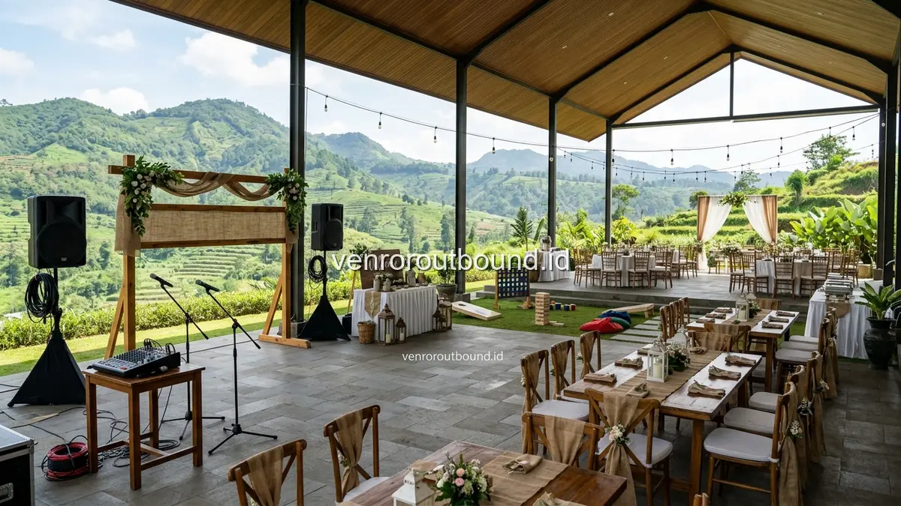

1. Apa Itu Paket Custom Family Gathering dan Mengapa Menjadi Pilihan Terbaik?
Jawaban Singkat: Paket Custom Family Gathering Reuni Keluarga Besar dari Vendor Outbound menawarkan kebebasan merancang acara sesuai keinginan keluarga Anda. Termasuk fasilitator game ramah, sound system, banner acara, serta pilihan lokasi terbaik di Batu Malang berdasarkan kebutuhan dan konfirmasi proposal kegiatan family gathering outbound yang disepakati.
Setiap keluarga besar memiliki dinamika, tradisi, dan kebutuhan yang sangat personal. Ketika merencanakan reuni keluarga yang melibatkan puluhan hingga ratusan peserta dari berbagai generasi, paket wisata atau outbound yang bersifat kaku dan generik sering kali tidak dapat memenuhi harapan seluruh anggota. Beberapa keluarga menginginkan porsi waktu temu kangen dan karaoke yang lebih lama di pendopo, sementara yang lain memprioritaskan permainan outbound edukatif untuk anak-anak dan keponakan.
Paket Custom Family Gathering hadir sebagai solusi perancangan acara yang fleksibel, modular, dan transparan. Panitia keluarga memegang kendali penuh untuk menentukan komposisi fasilitas, pemilihan lokasi villa atau resort di kawasan Batu Malang, penyesuaian menu makanan tradisional, hingga tingkat intensitas permainan yang sepenuhnya ramah lansia dan balita.
Dengan skema custom ini, anggaran yang dialokasikan keluarga dapat dimanfaatkan secara optimal untuk hal-hal yang benar-benar bernilai bagi seluruh anggota, tanpa ada biaya mubazir untuk fasilitas yang tidak diperlukan.
2. Faktor-Faktor Kunci dalam Perancangan Gathering Keluarga Kustom
Saat berdiskusi dengan tim konsultan program Vendor Outbound, perancangan proposal kustom akan berpijak pada sejumlah parameter operasional penting:
- Skala Jumlah Peserta: Skema paket custom dapat dirancang fleksibel mulai dari kelompok keluarga inti 20 orang, rombongan menengah 50–80 orang, hingga perhelatan trah marga besar yang mencapai ratusan peserta lintas kota.
- Komposisi Demografi Usia: Pemetaan persentase balita, anak usia sekolah, remaja, orang tua produktif, hingga sesepuh berusia di atas 60 tahun untuk menentukan ritme dinamika acara.
- Karakteristik Venue yang Diinginkan: Pilihan antara villa privat dengan kolam renang keluarga, resort pegunungan berfasilitas aula luas, hotel bernuansa alam, atau taman rekreasi outdoor di Batu dan Malang.
- Format Durasi Waktu: Menyesuaikan antara format half-day (3–4 jam acara santai), full-day gathering (pagi hingga sore), atau paket menginap 2 hari 1 malam (2D1N).
- Alokasi Anggaran Keluarga: Rancangan paket diselaraskan dengan batas anggaran panitia dengan opsi inklusi fasilitas yang transparan dan dapat dipilih bertahap.
3. Komponen Fasilitas yang Dapat Disesuaikan dalam Proposal
Seluruh fasilitas yang tertuang di dalam draf proposal resmi dapat disesuaikan (customizable) berdasarkan kesepakatan keluarga. Berikut rincian komponen yang dapat dimasukkan:
A. Fasilitator Ramah & Master of Ceremony (MC): Tim pemandu acara profesional yang komunikatif, sabar, dan menguasai etika kesopanan saat memandu generasi senior serta interaktif saat mengajak anak-anak bergembira.
B. Peralatan Games & Perlengkapan Acara: Seluruh modul alat permainan rekreatif, papan petunjuk, alat peraga visual, hingga panggung mini untuk acara sambutan dan pembagian cinderamata.
C. Perangkat Sound System & Hiburan: Sound system portabel berkualitas tinggi dengan mikrofon nirkabel untuk kelancaran komunikasi di area terbuka, plus opsi musik pengiring akustik atau organ tunggal keluarga.
D. Identitas Visual & Dekorasi: Pembuatan spanduk/banner selamat datang bertuliskan nama keluarga besar, backdrop foto keluarga estetik, serta suvenir atau kaos seragam reuni.
E. Layanan Katering & Hidangan Khusus: Pilihan menu prasmanan selera nusantara yang tidak pedas, kudapan kue tradisional khas Jawa Timur, stasiun kopi dan teh herbal hangat, hingga hidangan istimewa seperti live cooking BBQ atau kambing guling pada malam keakraban.
F. Manajemen Logistik & Transportasi Lokal: Bantuan koordinasi titik kumpul, penyediaan petunjuk arah rute menuju lokasi villa/resort di Batu Malang, pengawalan area parkir kendaraan keluarga, hingga penyediaan porter untuk memudahkan mobilisasi barang bawaan lansia dan perlengkapan bayi.

4. Tabel Matriks Komparasi Opsi Komponen Paket Custom
Tabel berikut menguraikan opsi komponen yang dapat dibahas dan dikonfirmasi sebelum draf proposal difinalisasi:
| Komponen Program | Pilihan Opsi yang Tersedia | Status Penyesuaian | Catatan Penting |
|---|---|---|---|
| Jumlah Peserta | 20 orang, 50 orang, hingga ratusan peserta | Disesuaikan Kebutuhan | Kapasitas akhir diselaraskan dengan ukuran venue |
| Pilihan Lokasi | Villa privat, resort pegunungan, taman wisata Batu/Malang | Disesuaikan Kebutuhan | Survei aksesibilitas ramah lansia & anak |
| Modul Permainan | Fun games duduk, tebak kata, puzzle keluarga, sinergi tim | Disesuaikan Kebutuhan | Fokus pada kehangatan dan tawa bersama |
| Sound System & Audio | Paket audio outdoor/indoor, mic wireless, musik latar | Termasuk dalam Opsi | Disesuaikan dengan luasan area pertemuan |
| Banner & Dokumentasi | Backdrop foto, fotografer profesional, drone highlight | Opsional / Add-on | File foto digital diserahkan pasca-acara |
| Menu Konsumsi | Prasmanan nusantara, snack tradisional, live cooking BBQ | Disesuaikan Kebutuhan | Rasa ramah anak dan rendah minyak/pedas |
| Susunan Acara (Rundown) | Half-day santai, full-day outbound, atau 2D1N camp/resort | Kustom Penuh | Menyediakan jeda istirahat yang leluasa |
5. Contoh Susunan Acara (Rundown) Fleksibel: 1 Hari & 2D1N
Rundown dalam paket custom bersifat sangat fleksibel dan dapat diatur mengikuti ritme kebiasaan keluarga. Berikut dua contoh skenario rundown yang paling populer:
A. Skenario Satu Hari Penuh (Full-Day Gathering):
- 08.30 – 09.00: Tiba di venue resort Batu, registrasi peserta, pembagian syal tanda keluarga, dan menikmati welcome drink serta snack tradisional.
- 09.00 – 09.30: Pembukaan santai oleh MC, sambutan sesepuh keluarga, dan sesi foto bersama seluruh anggota.
- 09.30 – 11.30: Sesi Ice Breaking dan Family Fun Games inklusif di area taman rumput datar.
- 11.30 – 13.00: Istirahat, ibadah, dan makan siang prasmanan masakan khas Jawa Timur.
- 13.00 – 14.30: Panggung hiburan keluarga (pembagian doorprize, kuis silsilah keluarga, dan penampilan bakat anak-cucu).
- 14.30 – 15.00: Penutupan, doa bersama, dan pembagian bingkisan reuni.
B. Skenario Menginap 2 Hari 1 Malam (2D1N Gathering):
- Hari Pertama: Check-in villa/resort pukul 14.00, welcome tea time, games santai sore hari, makan malam bersama, dan malam keakraban di sekitar api unggun dengan jagung bakar dan musik akustik.
- Hari Kedua: Senam pagi ringan bersama lansia dan anak, sarapan pagi prasmanan, mini fun outbound keluarga, sesi foto bebas, dan persiapan check-out pukul 12.00 siang.
Konsultasikan Paket Custom Family Gathering Anda Sekarang
Sesuaikan rundown, menu prasmanan, fasilitas akomodasi, dan konsep games inklusif sesuai profil keluarga besar Anda bersama VENDOR OUTBOUND.
Hubungi Kami via WhatsApp6. Keunggulan Suasana Pegunungan Batu & Malang untuk Reuni Keluarga
Kota Wisata Batu dan kawasan Malang Raya menawarkan keunggulan iklim pegunungan yang sejuk, pemandangan lembah yang hijau menenangkan, serta akses jalan yang mudah dijangkau dari berbagai kota di Jawa Timur. Suasana alam yang asri terbukti efektif membantu melepas kepenatan rutinitas perkotaan dan menciptakan ketenangan batin bagi generasi senior.
Selain venue outbound, kawasan ini juga dikelilingi berbagai destinasi wisata edukasi dan agrowisata petik apel/jeruk yang dapat dikombinasikan dengan agenda reuni keluarga Anda.
7. Tahapan Praktis Konsultasi & Permintaan Proposal Resmi
Untuk memulai perancangan acara keluarga Anda bersama tim Vendor Outbound, ikuti alur komunikasi berikut:
- Konsultasi Awal via WhatsApp: Sampaikan perkiraan tanggal acara, rentang usia peserta, estimasi jumlah rombongan, dan preferensi konsep kegiatan.
- Penyusunan Draf Proposal: Tim konsultan kami akan merancang proposal penawaran resmi yang memuat alternatif venue, rincian susunan acara, dan simulasi biaya yang transparan.
- Penyesuaian (Fine-Tuning) Modul: Panitia dapat meminta penambahan atau pengurangan fasilitas sesuai kesepakatan musyawarah keluarga.
- Survei Bersama & Finalisasi: Melakukan pengecekan fisik ke lokasi pilihan sebelum penandatanganan konfirmasi kerja sama.
8. Informasi Awal yang Perlu Disiapkan Panitia Sebelum Konsultasi
Agar proses penyusunan proposal berjalan cepat dan akurat, panitia disarankan menyiapkan data awal berikut: perkiraan tanggal pelaksanaan (weekend/hari libur), jumlah anggota keluarga dewasa, anak-anak, dan lansia, lokasi asal rombongan (untuk menentukan titik jemput atau koordinasi parkir), serta kegiatan khusus yang wajib ada (seperti tumpengan, doa bersama, atau tukar kado).
Selain itu, panitia sebaiknya mendiskusikan batasan anggaran dasar (budget frame) dan preferensi akomodasi keluarga sejak awal. Keterbukaan informasi ini mempermudah tim perancang Vendor Outbound memberikan opsi kombo terbaik, seperti pemilihan venue villa dengan kapasitas tempat tidur memadai atau resort dengan fasilitas ramah kursi roda tanpa melampaui batas anggaran yang telah disepakati bersama.
9. Kesimpulan & Wujudkan Reuni Keluarga Berkesan
Reuni keluarga besar adalah momentum istimewa yang merajut kembali kehangatan persaudaraan antargenerasi. Dengan mempercayakan manajemen teknis, fasilitator ramah, dan peralatan permainan kepada penyedia outbound profesional, seluruh panitia dan anggota keluarga dapat hadir dengan hati ringan dan fokus merayakan sukacita bersama.
Jadikan reuni keluarga besar Anda di tahun 2026 ini sebagai lembaran kenangan indah yang penuh tawa, keakraban, dan kebahagiaan sejati di alam sejuk Batu Malang.
Pertanyaan Sering Diajukan (FAQ)

Arby Ardiansyah
Arby Ardiansyah menulis konten informatif mengenai outbound, team building, corporate gathering, wisata outdoor, dan perencanaan kegiatan kelompok berbasis standar manajemen risiko terpadu di Indonesia.